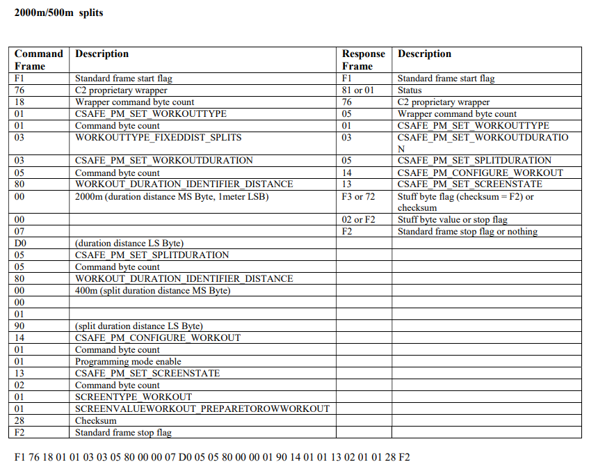
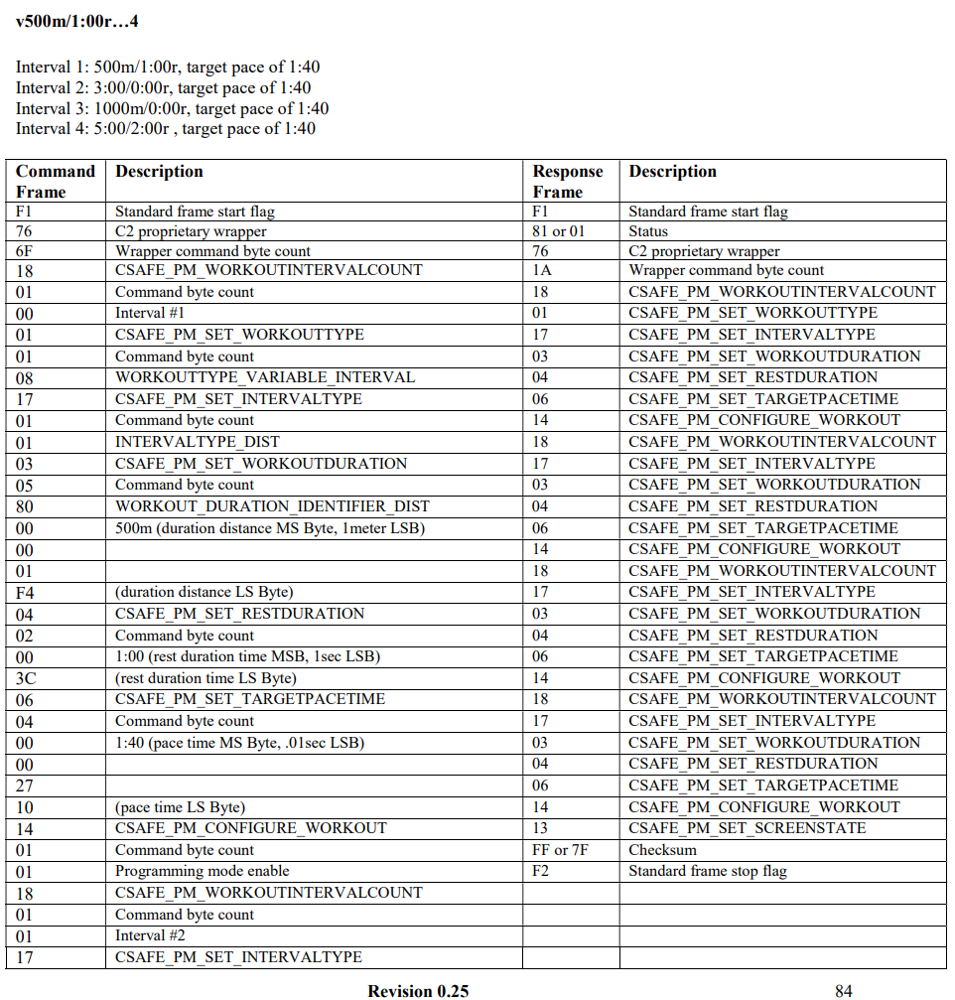
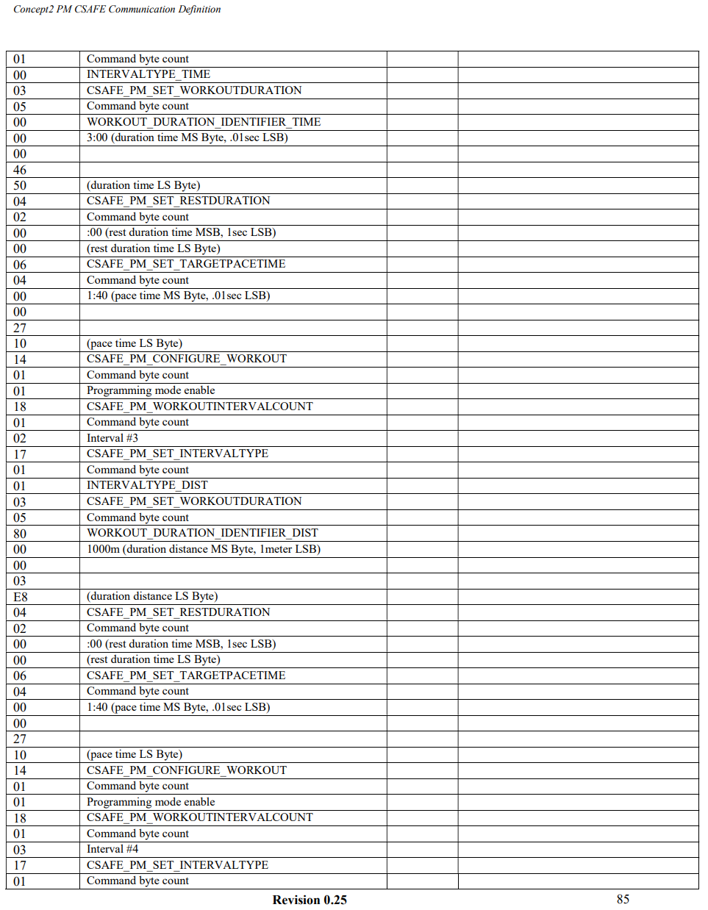
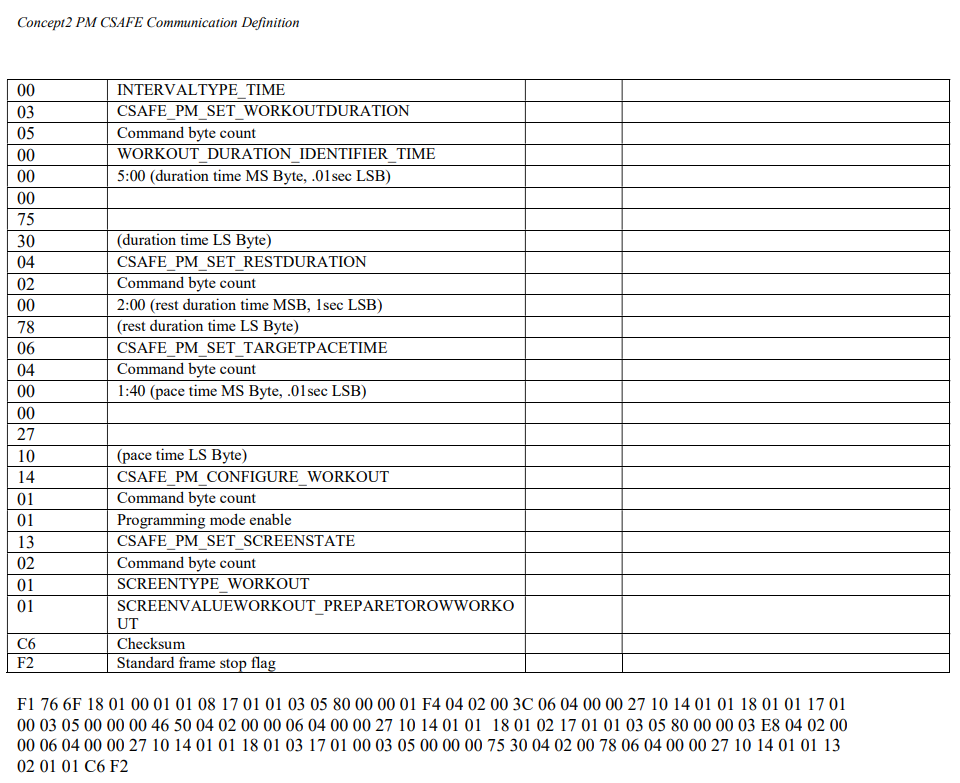
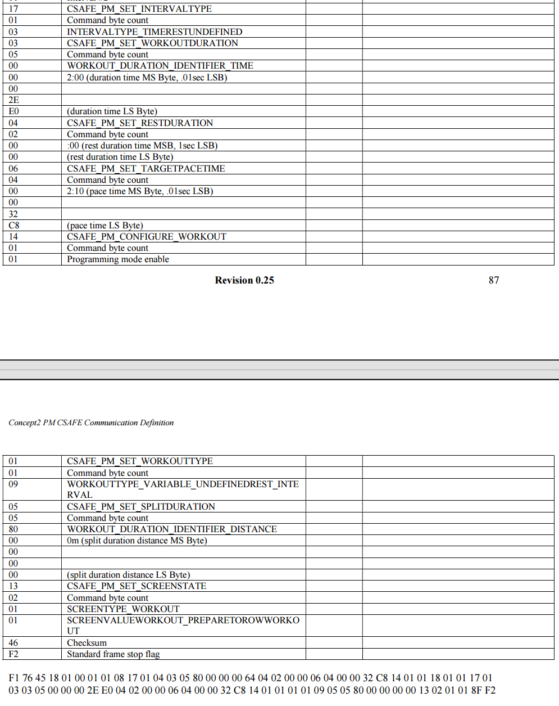

concept2下发设置命令¶
本文档是叙述如何构建合适的指令，使用官方提供的API接口向concept2划船机发送预定义命令。
本文档不保证完全准确，仅做参考使用，请使用者切勿盲从。
1. 注意事项¶
- 发送以下命令需先用蓝牙与表头相连
- 构建命令字符数量最大值为120
- 下发指令可使用官方提供
PMSDKDemo
2.校验和计算¶
-
除去
f1、f2将所有数据进行异或 -
示例
需要计算的数据：76 18 01 01 05 03 05 00 00 01 d3 c1 05 05 00 00 00 13 71 14 01 01 13 02 01 01
校验和：19
发送命令：f1 76 18 01 01 05 03 05 00 00 01 d3 c1 05 05 00 00 00 13 71 14 01 01 13 02 01 01 19 f2
3.固定时间/距离¶
1. 距离/分段¶
- 原始示例
该命令使用 tkcmdsetUSB_do_DDIcommand 发送，其发送的含义为：目标距离2000m，分段距离400m

- 自定义示例
完整命令：f1 76 18 01 01 03 03 05 80 00 01 11 11 05 05 80 00 00 00 64 14 01 01 13 02 01 01 0b f2
说明：目标距离69905m,分段距离100m
00 01 11 11：表示设定目标距离为69905m，以1m为单位
00 00 00 64：表示分段距离为100m，以1m为单位
2.时间/分段¶
- 原始示例
该命令使用 tkcmdsetUSB_do_DDIcommand 发送，其发送的含义为：目标时间20min,分段时间4min

- 自定义示例
完整命令：f1 76 18 01 01 05 03 05 00 00 01 d4 c0 05 05 00 00 00 17 70 14 01 01 13 02 01 01 1a f2
说明：目标时间20min,分段时间1min
00 01 d4 c0：表示设定目标时间为20min，以0.01sec为单位
00 00 17 70: 表示分段时间为1min，以0.01sec为单位
4.可变间隔¶
1.分段（距离/时间+休息）¶



完整命令：f1 76 6f 18 01 00 01 01 08 17 01 01 03 05 80 00 00 01 f4 04 02 00 3c 06 04 00 00 27 10 14 01 01 18 01 01 17 01 00 03 05 00 00 00 46 50 04 02 00 00 06 04 00 00 27 10 14 01 01 18 01 02 17 01 01 03 05 80 00 00 03 e8 04 02 00 00 06 04 00 00 27 10 14 01 01 18 01 03 17 01 00 03 05 00 00 00 75 30 04 02 00 78 06 04 00 00 27 10 14 01 01 13 02 01 01 09 f2
1min*3+间隔30s:f1 76 43 18 01 00 01 01 08 17 01 00 03 05 00 00 00 17 70 04 02 00 1e 14 01 01 18 01 01 17 01 00 03 05 00 00 00 17 70 04 02 00 1e 14 01 01 18 01 02 17 01 00 03 05 00 00 00 17 70 04 02 00 00 14 01 01 13 02 01 01 53 f2
100m*3+间隔30s:f1 76 43 18 01 00 01 01 08 17 01 01 03 05 80 00 00 00 64 04 02 00 1e 14 01 01 18 01 01 17 01 01 03 05 80 00 00 00 64 04 02 00 1e 14 01 01 18 01 02 17 01 01 03 05 80 00 00 00 64 04 02 00 00 14 01 01 13 02 01 01 d1 f2
5. 未定义休息时间¶


完整命令：f1 76 45 18 01 00 01 01 08 17 01 04 03 05 80 00 00 00 64 04 02 00 00 06 04 00 00 32 c8 14 01 01 18 01 01 17 01 03 03 05 00 00 00 2e e0 04 02 00 00 06 04 00 00 32 c8 14 01 01 01 01 09 05 05 80 00 00 00 00 13 02 01 01 8f f2
17 01 04：04表示目标距离休息时间未定义
17 01 03 ：03表示目标时间休息时间未定义
01 01 09：设置未定义休息时间
100m Undefined Rest +3min Undefined Rest：f1 76 31 18 01 00 01 01 08 17 01 04 03 05 80 00 00 00 64 14 01 01 18 01 01 17 01 03 03 05 00 00 00 2e e0 14 01 01 01 01 09 05 05 80 00 00 00 00 13 02 01 01 fb f2
6.终止锻炼¶
完整命令：f1 76 04 13 02 01 02 60 f2